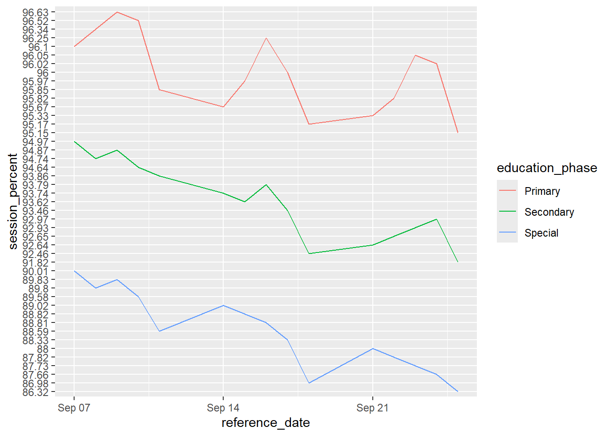

suppressPackageStartupMessages({
library(tidyverse)
library(data.table)
library(knitr)
library(psych)
})
attend_data <- fread("C:/Users/USER/Downloads/pupil-attendance-in-schools_2026-week-39/data/pupil-attendance-reasons_2026_week39.csv")National Reasons for School Absence in England Across Primary, Secondary and Special Education Schools
Reporting period: 7–25 September 2026
Coverage: 15 weekdays
Analysis type: Descriptive analysis of aggregated school attendance data
Summary
This analysis examined the proportions of recorded absence sessions attributed to different absence reasons across Primary, Secondary and Special education over 15 weekdays in September 2026.
Illness was the largest contributor to recorded absence sessions in all three education phases. However, the relative contribution of other absence reasons differed between phases. Other unauthorised absence accounted for a particularly large share in Secondary education, while Special education had relatively larger shares of other authorised absence and temporary reduced timetables.
These patterns were broadly consistent when comparing average daily proportions with proportions calculated from pooled session counts. The findings describe the composition of recorded absence; they do not establish why the differences occur or indicate which phase had the highest overall absence rate.
Research Question
The analysis addressed the question:
What proportion of recorded absence sessions is associated with each absence reason, and how does this distribution differ between Primary, Secondary and Special education?
The objective was to identify the most prominent reasons for recorded absence and explore similarities and differences between the three education phases.
Data and Methodology
Data coverage
The analysis used an aggregated school attendance dataset covering 15 weekdays between 7 and 25 September 2026.
The analysis was restricted to:
National-level records.
Primary, Secondary and Special education.
Weekday records, excluding weekly and year-to-date summaries.
Records classified as absence.
Detailed absence reasons, excluding the aggregate categories Overall absence, All authorised and All unauthorised.
The resulting reason-level dataset contained 675 observations: 15 weekdays, three education phases and 15 absence reasons.
Calculating absence proportions
For each date and education phase, the proportion associated with each reason was calculated as:
The denominator was the total number of recorded absence sessions for the corresponding date and education phase.
This measures the share of absence sessions attributed to each reason. It does not measure the percentage of pupils experiencing that reason, because the dataset is aggregated and individual pupils cannot be identified or tracked.
Summary measures
Two complementary approaches were used:
Mean daily proportion: the average of the daily percentages across the 15 weekdays. Each weekday contributes equally to this average.
Session-weighted proportion: the total sessions attributed to a reason divided by the total absence sessions across the observed weekdays. Days with more absence sessions consequently contribute more weight.
The daily reason proportions summed to 100% for each date and education phase. Checks also found no missing values in the calculated reason counts, denominators or proportions for the selected analysis.
Exploratory Analysis
Weekly attendance patterns, across the 3 weeks, showed an overall decrease in attendance by 1.28% points.
national_weekly <- attend_data %>%
filter(
geographic_level == "National",
attendance_type == "Overall attendance",
education_phase == "All schools",
time_frame == "Week"
)
national_weekly[, c(
"time_period",
"time_identifier",
"reference_date",
"session_count",
"session_percent"
)] time_period time_identifier reference_date session_count session_percent
<int> <char> <IDat> <char> <char>
1: 2026 Week 37 2026-09-07 64170370 95.37
2: 2026 Week 38 2026-09-14 64074915 94.55
3: 2026 Week 39 2026-09-21 63452315 94.09weekly_attend <- as.numeric(national_weekly$session_percent)
weekly_attend[3] - weekly_attend[1][1] -1.28Investigating across the Primary, weekly attendance dropped across the 3 weeks by 0.61 % points, which was relatively little compared to what was observed across the Secondary and the Special schools with 2% point drops, respectively.
primary_weekly <- attend_data %>%
filter(
geographic_level == "National",
attendance_type == "Overall attendance",
education_phase == "Primary",
time_frame == "Week"
)
primary_weekly[, c(
"time_period",
"time_identifier",
"reference_date",
"session_count",
"session_percent"
)] time_period time_identifier reference_date session_count session_percent
<int> <char> <IDat> <char> <char>
1: 2026 Week 37 2026-09-07 33581441 96.29
2: 2026 Week 38 2026-09-14 33640194 95.81
3: 2026 Week 39 2026-09-21 33529222 95.68weekly_attend_primary <- as.numeric(primary_weekly$session_percent)
weekly_attend_primary[3] - weekly_attend_primary[1][1] -0.61secondary_weekly <- attend_data %>%
filter(
geographic_level == "National",
attendance_type == "Overall attendance",
education_phase == "Secondary",
time_frame == "Week"
)
secondary_weekly[, c(
"time_period",
"time_identifier",
"reference_date",
"session_count",
"session_percent"
)] time_period time_identifier reference_date session_count session_percent
<int> <char> <IDat> <char> <char>
1: 2026 Week 37 2026-09-07 29253117 94.61
2: 2026 Week 38 2026-09-14 29094522 93.42
3: 2026 Week 39 2026-09-21 28596950 92.61weekly_attend_secondary <- as.numeric(secondary_weekly$session_percent)
weekly_attend_secondary[3] - weekly_attend_secondary[1][1] -2special_weekly <- attend_data %>%
filter(
geographic_level == "National",
attendance_type == "Overall attendance",
education_phase == "Special",
time_frame == "Week" )
secondary_weekly[, c( "time_period", "time_identifier",
"reference_date", "session_count", "session_percent" )] time_period time_identifier reference_date session_count session_percent
<int> <char> <IDat> <char> <char>
1: 2026 Week 37 2026-09-07 29253117 94.61
2: 2026 Week 38 2026-09-14 29094522 93.42
3: 2026 Week 39 2026-09-21 28596950 92.61weekly_attend_special <- as.numeric(secondary_weekly$session_percent)
weekly_attend_special[3] - weekly_attend_special[1][1] -2Daily attendance trends showed similar downward trends across the 3 education phases, with Special education schools recording the lowest % mean daily attendance with the highest variation, and the primary schools recording the highest % mean attendance at 95.92%
ggplot(daily_attend, aes(
reference_date, session_percent, group = education_phase,
colour = education_phase)) +
geom_line()
central_daily_attend <- daily_attend %>%
mutate(session_percent = as.numeric(session_percent)) %>%
group_by(education_phase) %>%
summarise(
mn_percent = mean(session_percent, na.rm = TRUE),
sd_percent = sd(session_percent, na.rm = TRUE))
kable(
central_daily_attend,
col.names = c("Education Phase", "Mean(%)", "SD(%)"))| Education Phase | Mean(%) | SD(%) |
|---|---|---|
| Primary | 95.92467 | 0.4470677 |
| Secondary | 93.54400 | 0.9675138 |
| Special | 88.48667 | 1.0850390 |
#|include: false
# Attendance composition
attend_absence <- attend_data %>%
filter(
!attendance_reason %in% c("Overall absence",
"All authorised",
"All unauthorised"),
education_phase %in% c("Primary", "Secondary", "Special")
)
absence_reasons <- attend_absence %>%
filter(attendance_status == "Absence",
geographic_level == "National",
time_frame %in% c("Monday",
"Tuesday",
"Wednesday",
"Thursday",
"Friday"))
total_absence <- attend_data %>%
filter(
geographic_level == "National",
time_frame %in% c("Monday", "Tuesday",
"Wednesday", "Thursday",
"Friday"),
education_phase %in% c("Primary", "Secondary", "Special"),
attendance_reason == "Overall absence"
)
total_absence_lookup <- total_absence %>%
select(
reference_date,
education_phase,
total_absent_sessions = session_count
) %>%
mutate(
total_absent_sessions = as.numeric(total_absent_sessions)
)
# Join totals to individual absence reasons
reason_proportions <- absence_reasons %>%
mutate(
reason_sessions = as.numeric(session_count)
) %>%
left_join(
total_absence_lookup,
by = c("reference_date", "education_phase")
) %>%
mutate(
proportion_absence = (reason_sessions / total_absent_sessions) * 100
)Results
Illness had the largest mean daily proportion of absence sessions across the 3 education phases. It accounted for close to half of the absence sessions in Primary and Secondary education, compared to the approximately 36% mean proportion in Special Education schools.
reason_summary <- reason_proportions %>%
group_by(education_phase, attendance_reason) %>%
summarise(
days_observed = sum(!is.na(proportion_absence)),
mean_proportion = mean(proportion_absence, na.rm = TRUE),
sd_proportion = sd(proportion_absence, na.rm = TRUE),
min_proportion = min(proportion_absence, na.rm = TRUE),
max_proportion = max(proportion_absence, na.rm = TRUE),
.groups = "drop"
) %>%
arrange(education_phase, desc(mean_proportion)) %>%
group_by(education_phase) %>%
slice_max(
order_by = mean_proportion,
n = 5,
with_ties = FALSE
) %>%
select(
education_phase,
attendance_reason,
mean_proportion,
sd_proportion)
kable(reason_summary,
col.names = c("Education Phase",
"Attendance Reason",
"Mean Proportion",
"SD Proportion"))| Education Phase | Attendance Reason | Mean Proportion | SD Proportion |
|---|---|---|---|
| Primary | Illness (i) | 48.047086 | 7.5960185 |
| Primary | Other unauthorised (o) | 14.556486 | 2.1820834 |
| Primary | Unauthorised holiday (g) | 12.110932 | 3.0958346 |
| Primary | Other authorised (c) | 8.040574 | 1.3632705 |
| Primary | Medical dental (m) | 6.405866 | 0.6156892 |
| Secondary | Illness (i) | 44.499809 | 6.4437649 |
| Secondary | Other unauthorised (o) | 28.145606 | 2.5801200 |
| Secondary | Other authorised (c) | 6.452857 | 1.5049385 |
| Secondary | Medical dental (m) | 5.202804 | 0.5269079 |
| Secondary | Unauthorised holiday (g) | 5.145526 | 2.0880057 |
| Special | Illness (i) | 35.687456 | 6.3380233 |
| Special | Other unauthorised (o) | 20.566721 | 1.4712091 |
| Special | Other authorised (c) | 13.123594 | 2.0747197 |
| Special | Temporary reduced timetable (c2) | 12.628570 | 1.4309356 |
| Special | Medical dental (m) | 8.345943 | 0.7379280 |
Other reasons varied across education phases
The remaining leading reasons showed further differences.
Three observations emerge:
Unauthorised holidays accounted for a larger share in Primary than in Secondary.
Other authorised absence represented a larger share in Special education than in either Primary or Secondary.
Temporary reduced timetables featured among the five largest contributors in Special education, accounting for 12.5% of pooled absence sessions.
These differences suggest that the composition of recorded absence was not identical across the three phases.
The patterns were similar under both summary approaches
The rankings and broad differences were similar when comparing mean daily proportions with session-weighted proportions.
For example, the mean daily illness proportions were 48.0%, 44.5% and 35.7% for Primary, Secondary and Special education, respectively. The corresponding weighted proportions were 48.6%, 45.3% and 36.2%.
The close agreement suggests that the main descriptive findings were not strongly dependent on whether each day received equal weight or was weighted by its number of absence sessions.
This agreement does not establish that the differences are statistically significant or that the observed patterns will persist beyond the period studied.
reason_weighted <- reason_proportions %>%
group_by(education_phase, attendance_reason) %>%
summarise(
reason_sessions = sum(reason_sessions, na.rm = TRUE),
total_absent_sessions = sum(total_absent_sessions, na.rm = TRUE),
weighted_proportion = reason_sessions / total_absent_sessions * 100,
.groups = "drop"
) %>%
arrange(
education_phase, desc((weighted_proportion))) %>%
group_by(education_phase) %>%
slice_max(
order_by = weighted_proportion,
n = 5,
with_ties = FALSE
) %>%
select(
education_phase,
attendance_reason,
reason_sessions,
weighted_proportion
)
kable(reason_weighted,
col.names = c("Education Phase",
"Attendance Reason",
"Reason Sessions",
"Weighted Proportion (%)"))| Education Phase | Attendance Reason | Reason Sessions | Weighted Proportion (%) |
|---|---|---|---|
| Primary | Illness (i) | 2079844 | 48.603991 |
| Primary | Other unauthorised (o) | 617732 | 14.435814 |
| Primary | Unauthorised holiday (g) | 509631 | 11.909595 |
| Primary | Other authorised (c) | 340386 | 7.954499 |
| Primary | Medical dental (m) | 271777 | 6.351172 |
| Secondary | Illness (i) | 2720496 | 45.343187 |
| Secondary | Other unauthorised (o) | 1669283 | 27.822357 |
| Secondary | Other authorised (c) | 375776 | 6.263153 |
| Secondary | Medical dental (m) | 308562 | 5.142880 |
| Secondary | Unauthorised holiday (g) | 293526 | 4.892271 |
| Special | Illness (i) | 188898 | 36.254100 |
| Special | Other unauthorised (o) | 106504 | 20.440696 |
| Special | Other authorised (c) | 67475 | 12.950086 |
| Special | Temporary reduced timetable (c2) | 65133 | 12.500600 |
| Special | Medical dental (m) | 43175 | 8.286328 |
Limitations
Several limitations should be considered when interpreting the findings.
Short observation period. The analysis covers only 15 weekdays. It cannot establish whether the patterns are typical of a full term or academic year, or whether they reflect short-term variation.
Aggregated data. The dataset records sessions rather than individual pupils. The analysis cannot estimate the proportion of pupils affected by each reason, distinguish repeated absence by the same pupil, or examine individual-level characteristics.
Descriptive analysis. The analysis compares proportions and summary measures. It does not test statistical significance, estimate causal effects or adjust for differences in the populations represented by each education phase.
Broad reason categories. Categories such as other unauthorised absence combine circumstances that cannot be distinguished in the present analysis. Their proportions should not be interpreted as evidence of a particular underlying behaviour or cause.
Interpretation of proportions. The findings concern the composition of recorded absence sessions, not the overall absence rate or the absolute number of pupils absent.
Scope of validation. The daily proportions summed to 100% in the selected data, and the missing-value checks returned zero. These checks support the internal consistency of the calculations but do not independently verify the original data’s definitions, completeness or accuracy.
Conclusions
Across the 15 weekdays examined, illness was the largest contributor to recorded absence sessions in Primary, Secondary and Special education. Its session-weighted proportion ranged from 36.2% in Special education to 48.6% in Primary education.
Other unauthorised absence was the second-largest contributor in all three phases, with a particularly high share in Secondary education (27.8%). Special education showed relatively larger shares for other authorised absence (13.0%) and temporary reduced timetables (12.5%), while unauthorised holidays were more prominent in Primary than in Secondary education.
The similarity between the mean daily and session-weighted results supports the stability of these broad descriptive patterns within the observed period.
Overall, the analysis answers the original research question by identifying the leading absence reasons and demonstrating how their relative contributions differ between education phases. The findings should be interpreted as a description of recorded absence sessions during the period studied, not as an explanation of the causes of absence or a comparison of overall attendance performance.